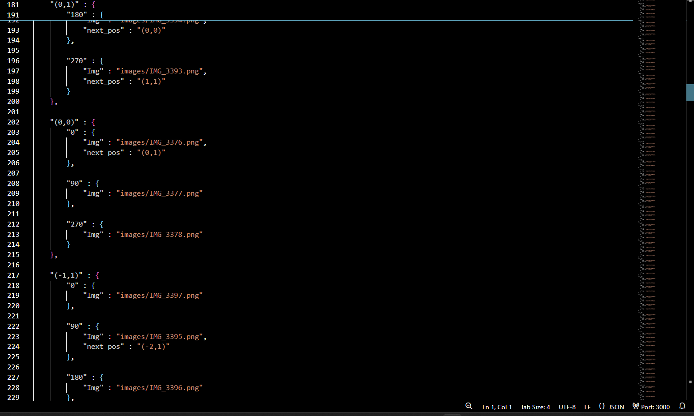
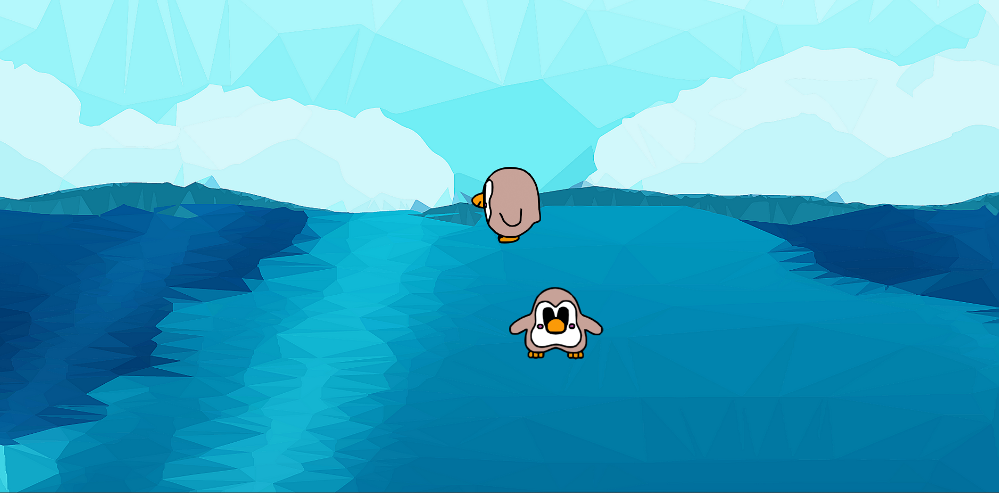

CS-485 Projects
Created by: Tucker Shaw
Game Programming!
For this class, I created a few individual projects involving 2D Animation. Check out some of the links provided below to see for yourself.
2D Map Walkthrough
One of the first projects that we did in this class was working with 2D photos.
We all created a walkthrough environment of 2D images inspired by the original 2D games like Bard's Tale.
We used json files to navigate through each photo like a map structure.
I used circular coordinates to ensure that each coordinate on the map was defined properly.
As you can see it is a LOT of work to get these images organized. 😅
Sprite Animation
This is a snapshot of my first sprite animation project.
I used a penguin sprite provided by my professor and created a javascript class for it.
There is a user controlled penguin which you can control with the arrow keys and stop with the spacebar.
The other penguin I have moving on its own in random directions.
If the two collide then you will see a fun little message displayed on the screen.
It has some graphical glitches so you might see some flickering with the sprite animation.
Check it out!
Boids Algorithm

This is a snapshot of my boids algorithm project.
I created a vector class from scratch and used it to apply some interesting physics to some fish sprites.
I decided that these fish are undead and live in a polluted ocean environment.
I like to think this explains why they move so erratically.
If you click on the link below and they do not spawn then just refresh the page!
Try it out yourself!
Contact Me
tuckershaw79@gmail.com